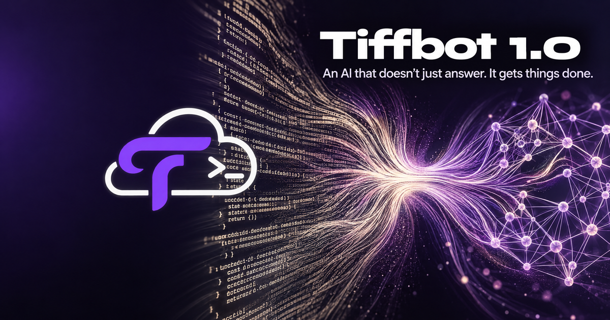

Trendify Labs product release
Tiffbot 1.0
An AI that doesn't just answer. It gets things done.
Released 9 November 2026
Available in select countries (Canada) and to select users in other parts of the world.

Introducing Tiffbot
An AI that doesn't just answer. It gets things done.
Artificial intelligence has largely been defined by conversations. You ask a question, receive an answer and move on. But what happens when AI can take responsibility for the work itself?
Today, we're introducing Tiffbot, an autonomous AI agent developed by Trendify Labs, designed to work like a digital employee.
Give it a job. Define what needs to be accomplished. Tiffbot can break down the assignment, determine the steps required, select appropriate tools and work towards completing it.
From managing connected applications and executing workflows to operating dedicated computing environments, Tiffbot brings a new dimension to how people interact with artificial intelligence.
This is AI built not just to assist, but to work.
01. Autonomous AI
Give it a job. Let it get to work.
Tiffbot is built around task delegation and autonomous execution.
Rather than requiring users to guide every individual step, Tiffbot can approach an assignment by identifying what needs to be done, planning the process and using available tools to work towards the desired outcome.
Whether it's research, organising information, coordinating applications or handling operational tasks, Tiffbot is designed to take instructions beyond the conversation.
You define the objective. Tiffbot works on the execution.
02. Cloud Computer
When your project needs a place of its own.
Tiffbot introduces Cloud Computer: a dedicated computing environment for projects and workloads that need a persistent home.
Not every project belongs on your personal computer. Some need their own environment, resources and continuity.
Now you can purchase a Cloud Computer for projects ranging from the server behind a game to a permanent home for an automation.
It gives your projects an environment where they can operate independently of your everyday workspace.
03. Automations
From scheduled tasks to event-triggered workflows.
Work doesn't always happen when you're available to initiate it.
With Tiffbot Automations, you can create workflows that run at scheduled times or respond to specific events.
Move beyond one-time instructions and establish repeatable processes that handle recurring responsibilities.
From routine operations to connected workflows, automations help turn individual tasks into ongoing systems.
04. Remote Control & Computer Use
Your computer, one voice command away.
Tiffbot brings AI into the computer environment itself.
Through Remote Control and Computer Use, users can interact with their computing environments through AI-assisted commands and actions.
Instead of limiting AI to a chat window, Tiffbot extends interaction into the tools, applications and interfaces where work happens.
Your computer becomes part of your AI workspace.
05. Super Computer
When the task demands more.
Some assignments require more than ordinary conversational intelligence.
Tiffbot can use Super Computer when a task requires additional computing capabilities, extending the resources available to tackle more demanding projects.
It is another part of the infrastructure that allows Tiffbot to move from answering questions to undertaking meaningful work.
06. Connected Applications & MCP Connectors
Bring your digital workspace together.
Tiffbot is designed to work within a connected ecosystem.
Through application integrations, users can connect supported services and bring their digital tools into the Tiffbot environment.
Its Model Context Protocol (MCP) connector further extends this capability, allowing compatible external tools and services to be connected through a standardised integration architecture.
The result is an AI agent that can work across more than one application or environment.
07. Tiff Teams
One conversation. Multiple AI minds.
Some assignments benefit from more than one perspective.
Tiff Teams introduces a collaborative environment where users can create and name up to three AI identities.
You can communicate with one AI independently or bring multiple assistants into a shared conversation.
Each identity operates through an underlying intelligence engine configured on the server side, allowing users to build their own AI team without having to manage separate technical infrastructures.
It's a different approach to multi-agent collaboration: a working environment shaped around the user's needs.
A new way to work with AI
Tiffbot brings together autonomous task execution, computing environments, automation, computer interaction, application integrations and multi-agent collaboration.
These capabilities represent a broader shift in how we think about artificial intelligence.
We believe the next generation of AI systems will not be judged only by the quality of their responses, but also by their ability to undertake tasks, interact with tools and deliver useful outcomes.
Tiffbot is our step in that direction.
Early Access
Meet Tiffbot before everyone else.
Tiffbot is available through an early-access programme, with free access for users who have an invitation code.
You can start with Meettiffbot, which is being opened to a limited number of early users on a first-come, first-served basis.
Cloud Computer and other capabilities are subject to their respective availability and access arrangements.
The future of AI isn't just about what you can ask. It's about what you can delegate.
Tiffbot
An AI that works like an employee.
Developed by Trendify Labs.
Redefining intelligence.